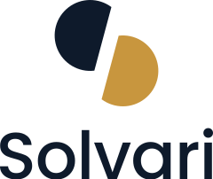

V1Black & white
One-color version for faxes, stamps, engraving, newspaper print and any job limited to a single ink. Use black on light backgrounds and white on dark ones.
Solvari stands for solving various problems. The mark splits one idea into two contrasting forms. The upper shape is the question, the lower shape is the answer. Rotated 180° from each other, they form an S.
A deep, steady form in Solvari Navy. It stands for the research side of the business: listening, asking, understanding a problem fully.
The same shape turned over, in Insight Gold. It stands for the system that gets built once the question is clear.
Both shapes come from one circle cut by a chord tilted 15°. The slant gives the S its forward lean, and the narrow gap keeps the two halves distinct.
Every version is an SVG with outlined type, so it scales cleanly from a 16 px browser tab to a building sign. Pick the version by background and printing method.
One-color version for faxes, stamps, engraving, newspaper print and any job limited to a single ink. Use black on light backgrounds and white on dark ones.
The default logo. Navy question, gold answer, navy wordmark. Use on white or very light backgrounds for the website, decks, documents and print.
For navy, black or dark photographic backgrounds and dark-mode interfaces. The question turns white, the answer stays gold so the two halves keep their meaning.

The mark alone, centered on a navy rounded square. The solid tile keeps it legible on both light and dark browser tabs. This page uses it in its own tab.
Browser tabs can be light or dark, so the favicon carries its own navy background. At 16 px the gap between the halves still reads, which is why the gap is never narrowed.
| File | Size | Where it goes |
|---|---|---|
| favicon.svg | any | Browser tab, bookmarks. <link rel="icon" type="image/svg+xml" href="favicon.svg"> |
| favicon-32.png | 32 × 32 | Fallback for older browsers |
| apple-touch-icon.png | 180 × 180 | iOS home screen |
| solvari-icon-light.svg | any | Social avatars and app stores that already sit on a dark UI |
The mark and wordmark keep fixed spacing in each lockup. Use the files as supplied rather than placing the two parts by hand.
Website header, letterhead, email signature, slide footers. Gap between mark and word = 0.3 × mark height.


Square or tall spaces: title slides, posters, merchandise, event badges.
Profile pictures, favicons, watermarks, and places where Solvari is already named nearby.
Narrow horizontal strips such as partner logo walls or legal footers where the mark would be too small to read.
Keep an empty margin around the logo equal to x, the width of one half-shape. Nothing, including other logos, text or image edges, enters this zone.
| Version | Digital min. | Print min. | Common size |
|---|---|---|---|
| Horizontal | 120 px wide | 30 mm | Header 180–240 px |
| Stacked | 72 px wide | 20 mm | Title slide 320 px |
| Mark only | 24 px tall | 6 mm | Avatar 400 × 400 |
| Wordmark | 80 px wide | 20 mm | Footer 120 px |
| Favicon | 16 px | n/a | 32 / 180 px |
Light browser background · #FFFFFF
Dark browser background · #121212
Navy and gold follow Solvari’s company profile deck. Navy does the work; gold is used only for the answer and small highlights.
These changes break the question-and-answer idea or make the logo hard to read.